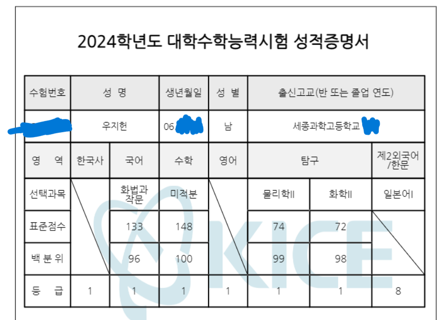

현재 이해원 수학연구소 문항제작자로
일하고 있는 마이너스1수 정시 의대생의 최단기간
성적향상 노하우를 아낌없이 전수해드립니다.
- 수능 성적
- 수상 내역
- 수업 방식
수능 성적
-1수(조졸 현역) 정시 의대생의 압도적인 수능 성적
2006년생 만17세의 나이로 한양대 의대(정시) 합격했습니다.
수능수학(미적분): 2024학년도 9월 모의평가 100점,
수능 100점
수능 물리학II: 2024학년도 9월 모의평가 47점(백분위97),
수능 50점(백분위99)
수능 화학II: 2024학년도 9월 모의평가 47점(백분위96),
수능 42점(백분위98)
수능 국어(화작): 2024학년도 9월 모의평가 4등급->
수능 88점(백분위96)
(물리학2, 화학2는 과외, 학원, 인강 등의 사교육 없이
100% 독학으로 공부했습니다.)
